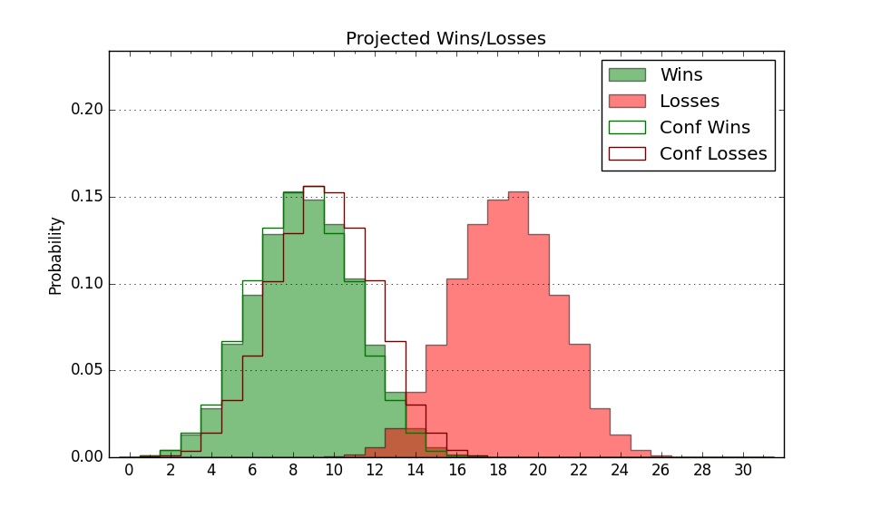

| Home | Game Probabilities | Conferences | Preseason Predictions | Odds Charts | NCAA Tournament |
| City: | Pine Bluff, Arkansas | |
| Conference: | Southwest (11th)
| |
| Record: | 5-13 (Conf) 5-24 (Overall) | |
| Ratings: | Comp.: -23.4 (352nd) Net: -23.4 (352nd) Off: 95.6 (300th) Def: 119.0 (357th) SoR: 0.0 (153rd) |
| Remaining | ||||||
|---|---|---|---|---|---|---|
| Date | Opponent | Win Prob | Pred. | |||
| Previous | Game Score | |||||
| Date | Opponent | Win Prob | Result | Off | Def | Net |
| 11/9 | @Creighton (69) | 1.6% | L 77-90 | 19.1 | 8.2 | 27.3 |
| 11/12 | @Colorado St. (33) | 0.9% | L 71-91 | 7.7 | 8.9 | 16.6 |
| 11/14 | @Wyoming (55) | 1.3% | L 45-85 | -21.7 | 6.9 | -14.8 |
| 11/18 | @Portland (176) | 5.4% | L 74-86 | 5.5 | 3.1 | 8.6 |
| 11/22 | @Seattle (131) | 3.8% | L 56-77 | -7.9 | 10.0 | 2.0 |
| 11/24 | @UC Santa Barbara (130) | 3.8% | L 58-86 | -8.0 | -1.8 | -9.8 |
| 11/26 | @Pacific (293) | 14.6% | L 50-74 | -15.6 | -2.6 | -18.2 |
| 12/1 | @Iowa St. (44) | 1.1% | L 64-83 | 14.2 | 2.1 | 16.3 |
| 12/4 | @Baylor (4) | 0.3% | L 54-99 | -1.6 | 0.0 | -1.6 |
| 12/8 | Arkansas St. (187) | 17.1% | L 73-84 | 5.8 | -2.5 | 3.3 |
| 12/14 | @Texas (18) | 0.6% | L 31-63 | -26.7 | 21.2 | -5.5 |
| 1/3 | Alabama A&M (320) | 46.4% | L 50-70 | -3.8 | -35.2 | -39.0 |
| 1/5 | Alabama St. (309) | 40.6% | W 70-68 | 11.3 | 3.6 | 14.9 |
| 1/8 | @Texas Southern (199) | 6.4% | L 71-90 | 14.0 | -7.3 | 6.7 |
| 1/10 | @Prairie View A&M (289) | 14.2% | L 58-75 | -17.0 | 14.0 | -3.0 |
| 1/15 | Florida A&M (314) | 44.3% | L 66-71 | -10.0 | 4.5 | -5.5 |
| 1/17 | Bethune Cookman (333) | 51.4% | W 69-63 | -6.0 | 12.4 | 6.3 |
| 1/22 | @Southern (195) | 6.3% | L 51-99 | -26.5 | -0.6 | -27.1 |
| 1/24 | @Grambling St. (304) | 16.4% | L 65-76 | -1.0 | -2.0 | -3.0 |
| 1/29 | @Mississippi Valley St. (355) | 45.0% | W 74-68 | 8.7 | -0.4 | 8.2 |
| 2/5 | Alcorn St. (259) | 29.7% | L 64-70 | -7.1 | 11.5 | 4.5 |
| 2/7 | Jackson St. (271) | 31.9% | L 47-60 | -16.5 | -5.2 | -21.7 |
| 2/12 | @Alabama St. (309) | 16.7% | W 75-70 | 11.3 | 14.6 | 25.9 |
| 2/14 | @Alabama A&M (320) | 20.3% | L 69-74 | 14.9 | -9.7 | 5.3 |
| 2/19 | Prairie View A&M (289) | 36.0% | L 84-92 | 12.5 | -12.0 | 0.5 |
| 2/21 | Texas Southern (199) | 18.9% | L 68-70 | 5.6 | 6.5 | 12.1 |
| 2/26 | Mississippi Valley St. (355) | 73.6% | W 93-79 | 3.8 | 0.1 | 3.9 |
| 3/3 | @Jackson St. (271) | 12.1% | L 79-87 | 31.5 | -21.1 | 10.4 |
| 3/5 | @Alcorn St. (259) | 11.0% | L 77-100 | 5.3 | -13.5 | -8.2 |
| Stats & Trends | |||||
|---|---|---|---|---|---|
| Current | Day | Week | Month | Season | |
| Composite | -23.4 | -0.0 | -0.1 | +1.2 | -3.0 |
| Comp Rank | 352 | -- | -- | -- | -2 |
| Net Efficiency | -23.4 | -0.0 | -0.1 | +1.4 | -- |
| Net Rank | 352 | -- | -- | -1 | -- |
| Off Efficiency | 95.6 | +0.0 | +1.4 | +3.8 | -- |
| Off Rank | 300 | +1 | +14 | +30 | -- |
| Def Efficiency | 119.0 | -0.0 | -1.5 | -2.4 | -- |
| Def Rank | 357 | -- | -2 | -4 | -- |
| SoS Rank | 222 | -1 | +5 | -99 | -- |
| Exp. Wins | 5.0 | -- | -0.2 | -0.4 | -2.2 |
| Exp. Conf Wins | 5.0 | -- | -0.2 | -0.4 | -1.5 |
| Conf Champ Prob | 0.0 | -- | -- | -- | -0.3 |

| Advanced Stats | ||
|---|---|---|
| Stat | Value | Rank |
| Off Eff FG % | 0.461 | 310 |
| Off Ast Ratio | 0.121 | 309 |
| Off ORB% | 0.235 | 308 |
| Off TO Rate | 0.167 | 205 |
| Off FT Ratio | 0.294 | 210 |
| Def Eff FG % | 0.582 | 356 |
| Def Ast Ratio | 0.178 | 356 |
| Def ORB% | 0.371 | 357 |
| Def TO Rate | 0.159 | 196 |
| Def FT Ratio | 0.356 | 294 |